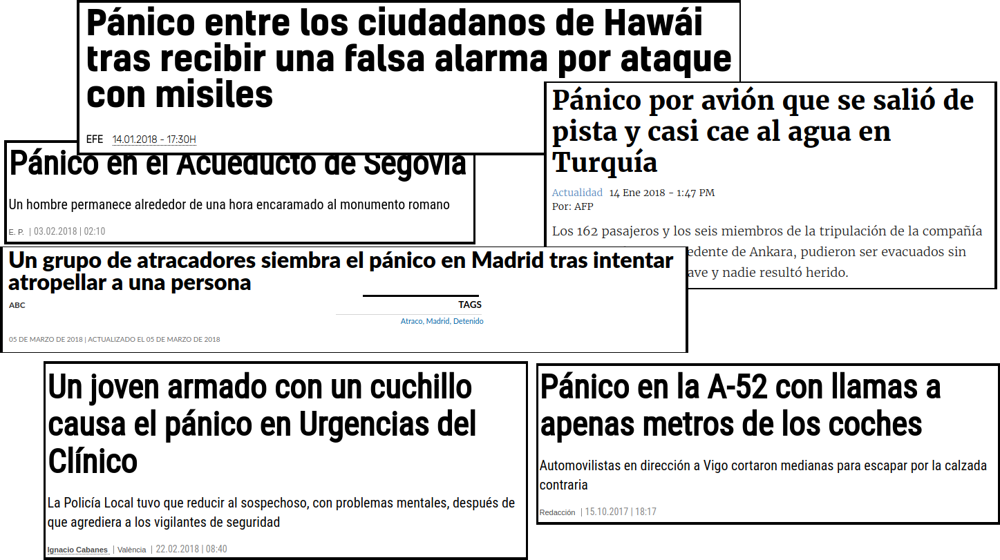
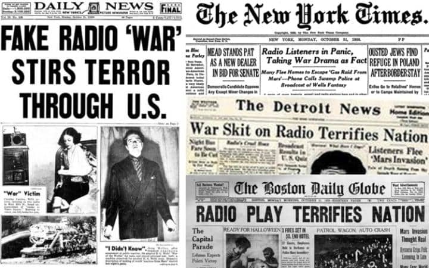

Acción Pública y Cambio Social
El Pánico
Juan Muñoz
Universitat Autònoma de Barcelona
juan.munoz@uab.cat
http:/juan.psicologiasocial.eu

Tragedias en el fútbol

Hillsborough (15-4-1989)
The Sun, 19 de abril de 1989
Desastres
¿Qué es el pánico?
Miedo colectivo intenso, experimentado simultáneamente por todos los miembros de una población, caracterizado por la regresión de las conciencias a un nivel arcaico, impulsivo y gregario, y que se traduce en reacciones primitivas de huida, de agitación desordenada, de violencia o de suicidio colectivo.
(Crocq et al., 1987. Citado por Dupuy, 1999, pág. 25)
Egoísmo: Tragedia de los comunes
Pero, ¿qué significa libertad? Cuando los hombres mutuamente acordaron instaurar leyes contra los robos, la humanidad se volvió más libre, no menos. Los individuos encerrados en la lógica de los recursos comunes son libres únicamente para traer la ruina universal; una vez que ven la necesidad de la coerción mutua, quedan libres para perseguir nuevas metas.
(Hardin, 1968, p. 1248)
¿Egoísmo?
Afirmamos que la sociabilidad es la ventaja más grande en la lucha por la existencia en todas las circunstancias naturales, sean cuales fueran. Las especies que voluntaria o involuntariamente reniegan de ella, están condenadas a la extinción, mientras que los animales que saben unirse del mejor modo, tienen mayores oportunidades para subsistir y para un desarrollo máximo (…) Los vertebrados superiores, y en especial el género humano, sirven como la mejor demostración de esta afirmación.
Kropotkin (1902)
El mito
50 años de evidencia sobre el pánico, y la conclusión es clara: la gente raramente entra en pánico, al menos en el sentido usual en que se usa esa palabra. Incluso cuando la gente siente un “miedo excesivo” -una sensación de abrumadora perdición- por lo general evitan los “esfuerzos imprudentes” y el “caos”. En particular, es improbable que causen daño a los demás en su búsqueda de seguridad e incluso pueden poner sus propias vidas en peligro para ayudar a los demás.
Clarke (2002, p. 21)
Pánico en la prensa

La Guerra de los Mundos

Antes de que terminara el radiograma, en todo el territorio de la Unión la gente rezaba, lloraba y huía despavorida ante el avance de los marcianos. Algunos corrían para socorrer a sus seres queridos. otros de despedían o hacían advertencias por teléfono, se apresuraban a informar a los vecinos, buscaban informes en los diarios o en las estaciones de radio, y pedían ambulancias a los hospitales y automóviles a la Policía. Se calcula que unos seis millones de personas oyeron el radiodrama y que, por lo menos, un millón de ellas se asustaron o se inquietaron.
Cantril (1942, p. 63)
Modelo de afiliación de A.R. Mawson
- Frente a la amenaza, estamos motivados a buscar lo familiar en lugar de simplemente huir.
- La presencia de familiares o allegados tiene un efecto calmante.
- El peligro físico parece ser mucho menos perturbador o estresante que la separación de sus semejantes y su entorno.
- Los individuos se calman por la presencia de objetos de unión, mientras que lo contrario es cierto si están solos, con extraños, o en un entorno desconocido.
Mawson (2005)
Identidad social y resiliencia
Mientras que el modelo de afiliación pone su énfasis teórico en los lazos sociales preexistentes. Lo que se necesita es un modelo de socialidad emergente masiva, es decir, una explicación que permita entender el surgimiento de lazos sociales en una multitud de extraños. En resumen, si bien el enfoque del ‘pánico masivo’ enfatiza la disolución de los lazos sociales, y los enfoques normativos y de afiliación enfatizan su mantenimiento, también debemos considerar la posibilidad de la creación de tales vínculos.
Drury, Cocking, & Reicher (2009 p, 488)
Referencias
Cantril, H. (1942). La invasión desde Marte: estudio de la psicología del pánico. Madrid: Revista de Occidente.
Clarke, L. (2002). Panic: Myth or Reality? Contexts, 1(3), 21–26. http://doi.org/10.1525/ctx.2002.1.3.21
Drury, J., Cocking, C., & Reicher, S. (2009). Everyone for themselves? A comparative study of crowd solidarity among emergency survivors. British Journal of Social Psychology, 48(3), 487–506. http://doi.org/10.1348/014466608X357893
Dupuy, J.-P. (1999). El pánico. Barcelona: GEDISA.
Hardin, G. (1968). The Tragedy of the Commons. Science, 13(3859), 1243–1248. http://doi.org/10.1126/science.162.3859.1243
Johnson, N. R. (1987). Panic and the Breakdown of Social Order: Popular Myth, Social Theory, Empirical Evidence. Sociological Focus, 20(3), 171–183.
Johnson, N. R. (1988). Fire in a Crowded Theater: A Descriptive Investigation of the Emergence of Panic. International Journal of Mass Emergencies and Disasters, 6(1), 7–26.
Kropotkin, P. A. (1902). El apoyo mutuo: un factor de la evolución. Córdoba: Séneca.
Mawson, A. R. (2005). Understanding Mass Panic and Other Collective Responses to Threat and Disaster. Psychiatry: Interpersonal and Biological Processes, 68(2), 95–113. http://doi.org/10.1521/psyc.2005.68.2.95
Stott, C., & Reicher, S. (1998). Crowd action as intergroup process: Introducing the police perspective. European Journal of Social Psychology, 28(4), 509–529. http://doi.org/10.1002/(SICI)1099-0992(199807/08)28:4\%3C509::AID-EJSP877\%3E3.0.CO;2-C